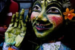

|
|
 
Collectives
developed around the Creative Sprit and Art
Introduction:
This lesson
is about exploring the creative spirit and requires you to examine
your beliefs about art. Above all, it should stimulate,
challenge and invigorate thinking about the “true
nature of art” and ultimately about the yourself as an
artist.
(pdf)
Creative Spirit
handout
|
The
Creative Spirit

|
This
lesson is about exploring the creative spirit and requires
you to examine your beliefs about art. Allow the exercise
to flow according to your interest. If your attention
is pulled in one direction, then move in that manner.
Above all, it should stimulate, challenge
and invigorate thinking about the “true nature
of art” and ultimately about yourself as artist.
|
 |
Talking
Circle :
What is creativity? Can it be made stronger? Who do you
perceive as being creative and why? What helps you become
more creative? Why are businesses now bringing in creativity
consultants? How can this help you in your everyday life?
What is art? How can you define art? Who is artistic? What
is aesthetics? |
What
is the Creative Spirit?
What is Art?
You have gone through many exercises, assignments and intense
units of study. Now it’s time to play for awhile and find
ideas. The ability to be playful is an important quality in
the making of art. Trusting instincts. Exploring ideas. Taking
risks. Trying again and again.
Art comes through a synthesis of all you know intellectually,
understand intuitively, feel through experience and feelings,
and percieve through your beliefs.
"Getting
Ideas"
The
following activities lead you through a process for developing
ideas. Select a combination of exercises to explore ideas and
inspiration:
A.
Personal Survey of Beliefs:
-
I
really like these things about myself ....
-
I
wish I could change .....
-
I
am most worried about .....
-
I
am most excited about ....
-
I
am most creative when ...
-
I
feel most vulnerable when ....
-
-
People
in this world need to remember .....
|
Play
interesting
music - try to find pieces you have not heard previously
(instrumental is recommended). Make the room comfortable
and set out a variety of art materials and various
sizes of paper. Do not talk during the exercise. Play
the music, focus on the moment, and doodle. Do not
try to make it look like anything in particular, do
not plan the drawing, do not analyze it - just “do
it”. Pay attention to the sounds, how it makes
you feel, does it suggest certain lines or textures?
|
Share
the personal survey and the doodle with one another
as a basis for discussion. There needs to be a high
level trust among the group in order to share your answers.
There is no need to comment on each other's answers,
just listen. The person speaking may allow questions
to be asked if they choose. The exercise should help
build a stronger group dynamic.
|
|
D.
Explore
through Improv:
1.
Start a scene from a suggestion from the group (or use
the personal survey as a starting point for ideas) -
at any time, anybody may call FREEZE and go in and change
it subtlely by adding in a new dimension, or by changing
the objective.
2. Group Improv: start a scene and add in characters
until everybody is in the scene - at any point call
out FREEZE and ask one to do an internal monologue.
3. In partners discuss a scene with lots of conflict,
where might it be set? Try the scene and at any point
the audience can call FREEZE and make a suggestion for
change, then let it continue.
4. Start the scene with a phone, call someone and they
then call the next person, and on down the line until
the first person is called in the end to bring it full
circle.
|
|
E.
Writing:
An
excellent book is Writing down the Bones, by
Natalie Goldberg, for creative writing memory exercises.
Use descriptions, settings, dreams as a starting point.
Use journals to track ideas and concepts connected to
discussions or other stimuli.
|
|
F.
Make a Mask:
Use
papier mache to create a character larger than life.
Or, explore some other new or recycled material in a
new way. The point is to make something - a visual
manifestation of an idea.
|
|
G.
Create a Soundscape:
Use
instruments or found objects to create a "soundtrack"
for a concept. It does not need to be specifically musical
, but rather, it may simply explore sound. What happens
when you layer sounds? Can you use sound in such a way
as it is not easily recognizable? How can voice be used
to create effects?
|
|
H.
Choreography:
Movement
is a form of communication. The body can be used to
express delicate nuances of emotion as well as powerful
statements of belief. Choreograph movement to express
an idea or to illustrate a point.
|
 |
Activity
9 - Journal:
Discuss the following topics as a group. Record
your personal responses in your journal.
• What does it mean “to be free of narration
and plot”?
• If you avoid these constructs, where does
it leave the artist?
• What are some "universal themes"?
• Explain the Dadaist approach to creation.
• Discuss the “purpose” of art. Is
there a wrong answer to the question? (20 min.) |
Return
to Student Lesson /
Previous Lesson
|
|
|